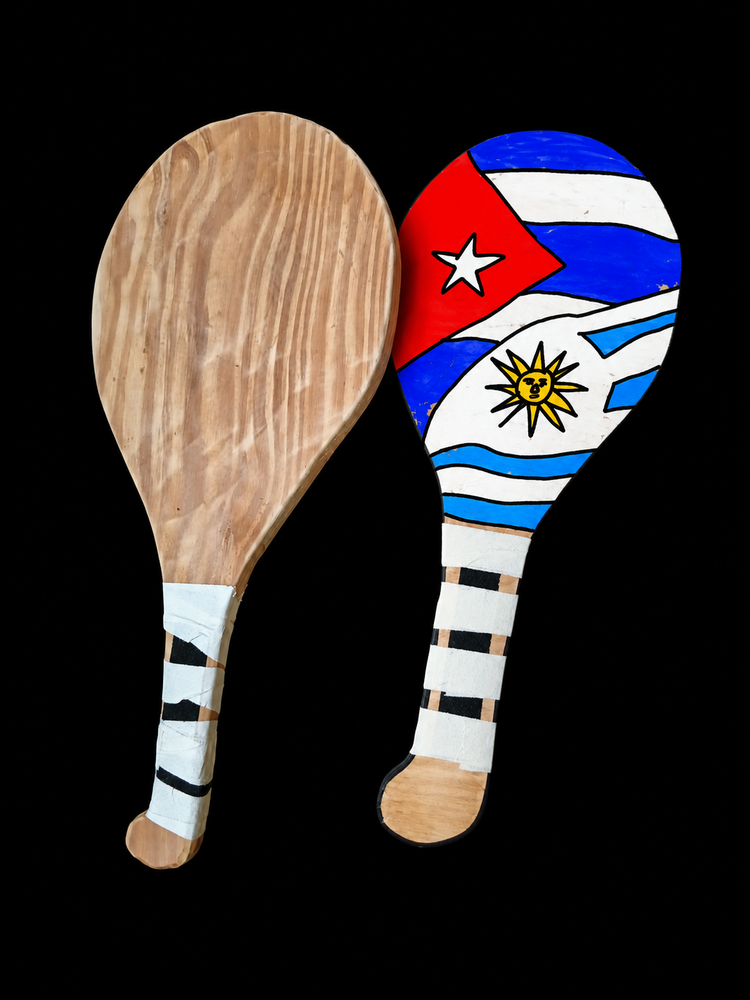
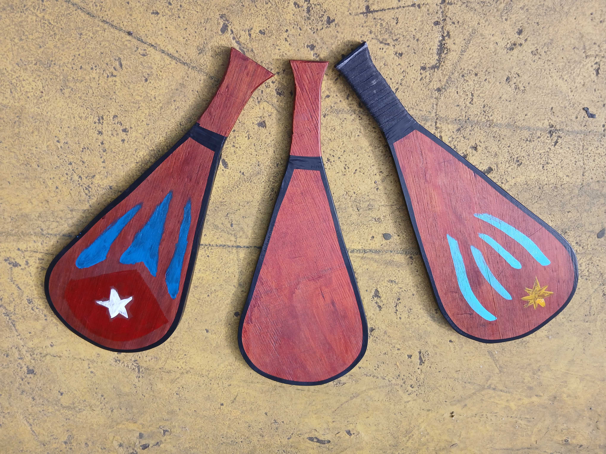
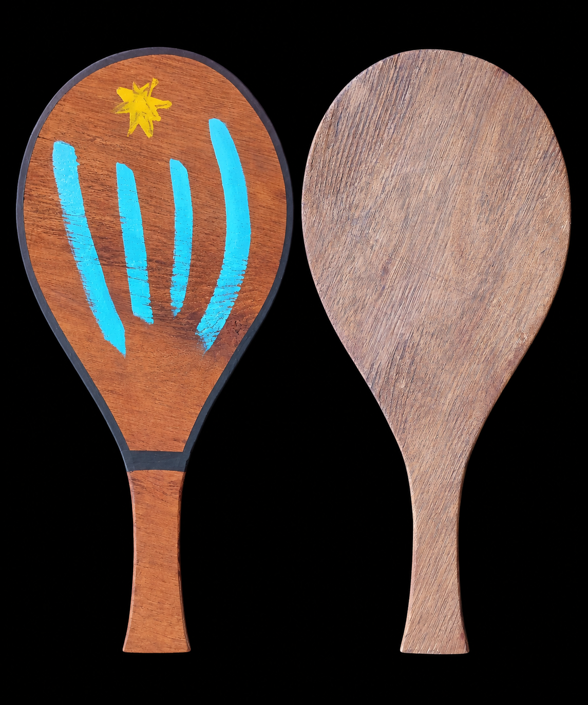
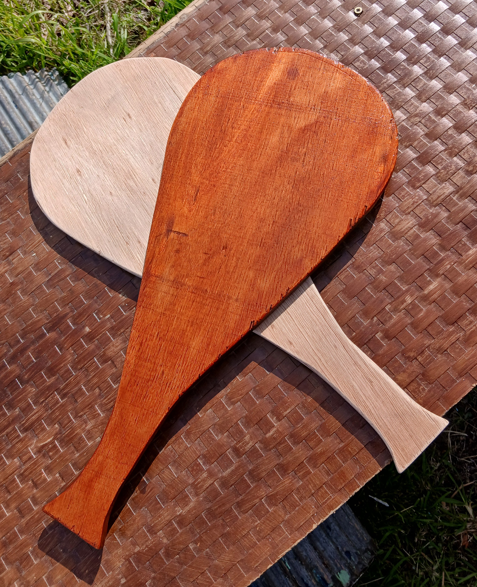
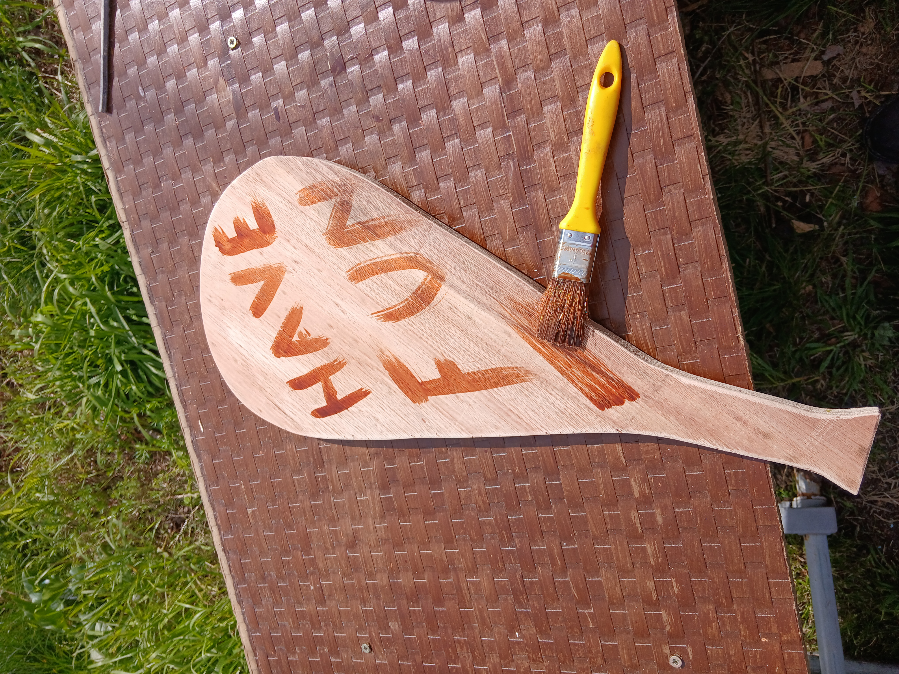

Paletas hechas a mano
Paletas artesanales diseñadas para jugar fronton o padel. Realizadas con pasión y esmero, probadas en la cancha y hechas en Montevideo.
Mirá nuestras paletas
Cada raqueta es hecha a mano con mucha atención al acabado.

Paletón tradicional, con un diseño flexible y robusto. Para jugadores que buscan una paleta poderosa y duradera.
$ 980

Paleta diseñada para jóvenes con diseño liviano pero poderoso.
$ 680

Personalizá tu paleta a tu gusto!
Contáctanos para conocer las opciones.

Fronton Racket comenzó por la pasión del juego de cancha en Cuba. En Uruguay conocimos del Fronton y nuestro objetivo es crear paletas de calidad con un diseño creativo y a un precio competitivo.
Cada paleta se realiza a mano en Montevideo, prestando atención a la madera, la forma, peso y acabado.
Probamos las paletas en la cancha con jugadores de fronton y constantemente realizamos mejoras en los diseños.
Contáctanos en WhatsApp para conocer disponibilidad, precios y opciones personalizadas.
WhatsApp